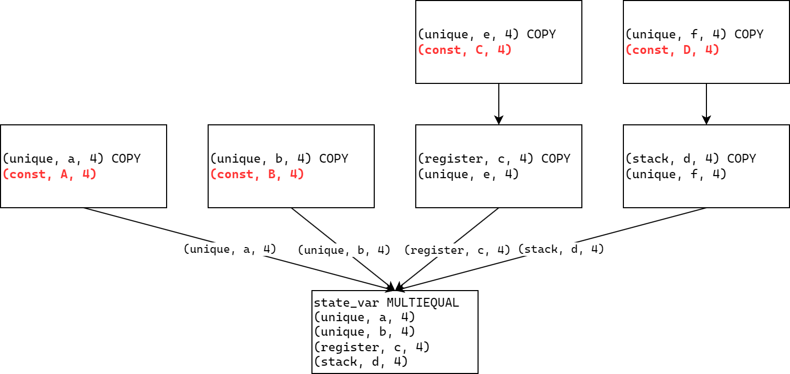

buu097-[SUCTF2019]hardcpp
这是一个简单的C++程序，但带有大量的控制流平坦化混淆。下面我将从头开始编写用于解决此类混淆问题的Ghidra脚本作为学习。
控制流平坦化中使用一个非常重要的值作为分发器。通常是以这个值为基础将控制流进行拆分，最终形成一个大型的switch语句。如一开始设置分发器为0x12345678，执行某些操作后再修改其值为0x87654321，随后重新进入循环并在switch中寻找该项。
使用静态分析方式对控制流平坦化混淆的代码进行解混淆的方式称为静态还原。静态还原的首要任务就是通过静态分析找到分发器是什么。好在控制流平坦化中的分发器一般都较为明显。下面将参考多篇资料完成本Ghidra脚本的编写。考虑使用Ghidra而不是其他静态反汇编工具主要是考虑到Ghidra完全开源，能够较为方便地查找相关的API。
主要参考资料：资料
笔者使用Intellij Idea进行开发，为了让Intellij Idea能够为我们进行代码补全工作，我们首先需要运行Ghidra根目录下/support/buildGhidraJar.bat脚本，运行完成后/support目录下将新增一个Ghidra.jar文件。在Intellij Idea中选择文件->项目结构->模块，导入该jar文件即可。
要开发的脚本预计需要实现以下功能：
- 传入两个参数作为函数地址，指向要进行静态分析的函数以及分发器初始化指令。
- 通过静态分析获取程序的执行流，并恢复正常的代码逻辑。
考虑到一个函数中可能有多个分发器，因此全部依靠脚本本身查找可能不是那么准确，因此暂时先由用户指定。
下面，我们来具体分析一下应该如何恢复控制流。
状态变量
现在，我们已经知道了分发器初始化的地址，通过这个地址对应的指令，我们可以提取该指令的p-code。对于初始化指令，其一定包含一个将常数COPY至某个VarNode的p-code，但这个VarNode并不一定是最终完成赋值操作的VarNode，因此我们还需要对这个VarNode进行跟踪，看看这个常数值通过可能的多次COPY后最终到达何处，即——我们要找到保存分发器的VarNode。
在本题的main函数中，初始化分发器的地址为0x40086C，通过Ghidra反汇编可知其中并没有多于的赋值操作，因此上面的trace环节将直接从COPY到达STORE后结束。跟踪到这个常量最终将会被保存到ram($U3200:8)中，也就是RBP-0x9C处：
1 | $U3200:8 = INT_ADD RBP, 0xffffffffffffff6c:8 |
但上面的三行代码不能直接被我们拿来进行分析。这些代码是P-code Micro code，并不是能够直接执行的P-code，我们还需要对其进行分析生成AST（抽象语法树），将这些P-code连接到一个AST中才能使用。我们使用的实际上是已经经过分析的高级P-code。
经过实验室高人指点，我写出了下面的代码：
1 | public class ollvm_solver extends GhidraScript { |
输入函数名为main，分发器初始化地址为0x40086C。该脚本的输出结果是：（为方便查看，笔者手动添加了一些换行）
1 | ollvm_solver.java> Running... |
这个输出是什么意思呢？可以看到最后输出的这条P-code非常长，并且是一条MULTIEQUAL指令。这就是我们要找的指令，而(stack, 0xffffffffffffff64, 4)则是我们要找的保存状态变量的VarNode。
现在有几个很重要的问题：什么是MULTIEQUAL命令？我们为什么要查找这类命令？
在Ghidra P-code文档中，我们可以找到MULTIEQUAL的说明：
此类指令不会在任何“通过汇编语言直接翻译得到的P-code序列”中得到，但在更大的粒度下可能会被各种分析算法添加进P-code序列。
这条指令具有1个输出参数以及至少2个输入参数。指令的意义是从多个可能的输入VarNode中复制值到输出VarNode。由于P-code具有静态单赋值（Static Single Assignment）特性，这类指令为Phi节点。每一个输入都对应一个“流入包含该MULTIEQUAL指令的基本块的控制流路径”。这条指令将多个输入中的其中之一的值复制到输出VarNode，选择的依据是最后执行的控制流路径。所有输入和输出必须有相同大小。
静态单赋值的意思是：每一个临时变量在整个程序执行时只能被赋值1次，随后作为常量看待。在上面的输出中，以unique开头的所有VarNode指的都是这类临时变量。在SSA的基础上，我们通过获取该基本块执行之前执行的路径，可以完全确定MULTIEQUAL应该将哪一个变量作为输入。这个结论的理论证明需要用到程序分析课程的相关专业知识，笔者没有学过，这里略过。
有了上面的结论之后，我们就可以完成下面的工作：分配器初始化时，必然会将某个VarNode保存到状态变量，即COPY指令的输入经过可能的多次复制后一定会走到MULTIEQUAL指令。我们只需要查找COPY指令的输出被哪一条指令用作输入，再查看那条指令的输出最终流向哪里，这样就找到了一条完整的数据流，与控制流路径相对应，最终必然能够找到MULTIEQUAL。简而言之，MULTIEQUAL指令需要在AST中从后向前看，而我们则在AST中从前向后查找。Ghidra正好提供了此类API：getLoneDescend——查找将该VarNode作为输入的唯一一个P-code指令。
常量值与基本块的对应关系
在本题的反汇编C语言代码中，我们可以看到很多这样的结构：
1 | while(true){ |
对于第一个while循环，其由至少2个基本块组成，前面是正常的逻辑，其中可能包括正常逻辑的多个基本块，最后以一个条件跳转结束。如果条件满足，则跳转到仅含有break的小基本块。
对于第二个if语句，其同样应该由至少2个基本块组成，前面的判断条件是一个基本块，如果条件满足则跳转到正常逻辑的基本块组中。
上面两种形式有共同的特点，即包含逻辑判断的基本块都应以CBRANCH（条件跳转）指令作为结尾，且判断条件都与状态变量有关。我们可以遍历函数中的所有基本块并筛选出满足这两个特点的基本块，再通过获取跳转的目标基本块，即可确认状态变量的不同值对应于哪些正常逻辑的基本块。
1 | (register, 0x206, 1) INT_EQUAL (stack, 0xffffffffffffff64, 4) , (const, 0x703ff685, 4) |
上面的基本块就是一个典型的OLLVM块，只进行了一个相等的判断，随后就是CBRANCH。Ghidra有获取P-code基本块最后一条指令的API，有获取后继节点的getLoneDescend、getDescendants，同样也有获取前趋结点的API——getDef，即获取定义一个VarNode的P-code指令。通过这些API，我们就能够获取跳转目的基本块与常量值的对应关系。可以使用一个三元组表示：目的基本块、常量、判断关系（相等、不等、小于等关系）
状态变量更新
除了获取上面的常量与基本块的对应关系外，我们还需要获取状态变量的更新位置，有了这两个信息，我们就可以将控制流串联起来，才能够对控制流进行优化。
在程序中，状态变量的更新可能会经历多个VarNode的中转，因此脚本中应该通过递归的方式进行更新的查找。具体而言，我们通过状态变量的MULTIEQUAL指令能够获取到所有直接复制值到状态变量的VarNode，这里笔者称为“上家”。但是上家可能并不是常数，而是寄存器值、内存值等，那么此时就还需要寻找这些值的“上家”，直到找到将常数赋值给VarNode的p-code为止。

还原控制流
基于上面获取的两组信息，我们即可完成对控制流的还原。但在此之前，我们还需要搞清楚还原的具体方法。
要了解如何还原，首先就需要弄清楚如何混淆。
如果需要将原代码逻辑的一个基本块拆分为多个基本块，则混淆后，每个基本块都应该有一个状态变量的赋值，并需要通过直接跳转回到主分配器，之后通过状态变量的值决定下一个要执行的基本块。
而如果原代码中包含if条件分支，则在处理上有几种可能性，如下图所示。将分支条件成立或不成立时的目标基本块替换为添加状态变量赋值的基本块，带有真正逻辑的基本块在随后回到主分配器后跳转。简而言之，就是要让if条件满足于不满足时状态变量的值不同。
通过上面的分析，我们就可以将需要处理的基本块分为2种看待。第一种是无条件跳转，即原代码逻辑没有分支；第二种是有条件跳转，即原代码逻辑有分支。
对于无条件跳转，此类基本块一定带有状态变量的更新，只有这样才能在下一次到达分配器时跳转到其他的基本块。如果该基本块A中包含将状态变量赋值为a的指令，那么下一个基本块的执行条件就是状态变量为a，找到一个基本块，其判断状态变量为a时跳转到基本块B，则可判定B为A的后继。
对于有条件跳转，我们需要确认条件满足时和不满足时，下一次判断状态变量的值时状态变量的值是多少。因此不能仅仅看有条件跳转的基本块A，还应该看到这个块引出的两个目标基本块Atrue和Afalse。如果引出的基本块B（Atrue或Afalse）没有对状态变量重新赋值，那么该路径使用的状态变量即为A中赋的值，否则如果重新赋值了，那么后续判断使用的可能就是这个新赋的值。当然有的时候B后面接着的基本块还有可能进行重新赋值，就比如原代码逻辑中存在"if"-"else if"-"else"的条件分支时，OLLVM可能就会将三个基本块赋3个值。对于此类代码逻辑，我们则必须递归进行处理，确定所有分支的目标基本块才能进行后续的修复操作。但经过笔者观察发现，对于此类代码逻辑，OLLVM更倾向于全部拆开，产生两个左边的执行流结构，而不会产生右边的结构。
综上所述，我们在还原控制流前需要保存的链接信息包含若干个二元组和若干个三元组。二元组用于保存无条件分支基本块及其后继，三元组用于保存有条件分支基本块及其两个后继。
程序修复
下面介绍的程序修复方案只考虑x86-64架构。
对于无条件跳转，我们只需要将跳转目标改为真实的后继即可。
对于有条件跳转则要复杂一些。在x86-64中，OLLVM常会使用CMOVXX系指令完成条件分支的两个赋值。
1 | mov eax, 0x12345678 |
如上面的代码所示，条件判断是原代码逻辑，如果条件成立则状态变量的值为0x87654321，否则为0x12345678。我们需要再最后三条指令上做文章，需修改为：
1 | jeq block_a ; condition true |
进一步调试
经过上面漫长的研究与摸索，我们总算是完成了整个流程，但当patch结果显示后，结果却并不尽如人意。经过分析发现，代码中存在这样的东西：
1 | .text:0000000000400876 8B 85 6C FF FF FF mov eax, [rbp+var_94] |
可以看到，下面一个基本块并不是对状态变量[rbp+var_94]判断，而是将这个值复制到了[rbp+var_A4]之后再判断。这两个基本块都是分配器的一部分，但是原本的状态变量被复制了一份。这种实际上是不会有影响的，Ghidra会将其优化掉，不会导致无法找全所有对应关系的问题。
那么真正的问题在哪呢？经过调试输出发现，有的汇编指令基本块虽然是JZ，但转换为p-code基本块后，判断条件变成了INT_NOTEQUAL，同时真出口与假出口调换。只需在代码中添加一个判断即可。
修复效果
1 | undefined8 main(undefined4 param_1,undefined8 param_2) |
可以看到，整个控制流已经完全正确地展现在我们面前。虽然还有一些全局变量的混淆，但至少已经能读懂了。需要注意的是，还有一个lambda函数无法被正常解混淆，因为其状态变量不是直接比较，而是进行了加运算再与0比较。这实际上和直接比较没什么区别，但会导致我们的脚本无法识别。因此还需要进行一些优化。
下面，还是首先处理一下与只读未写全局变量相关的混淆。这类混淆实际上混淆效果远不如控制流平坦化，但是出现在反汇编代码中还是让人难受。为了满足我这要了命的强迫症，遂决定静下心研究一番。
对于程序中所有全局变量的获取并没有什么难度。首先可以通过获取所有Symbol得到程序中的所有符号，这些符号包括标号（Label）和函数（Function），将函数剔除，然后获取该Label下的Data数据。在Ghidra的初始分析中，包含对变量引用的分析。Ghidra提供了获取全局变量引用的API，更方便的是，这些引用信息中还包含对变量的具体引用方式，包括读、写、调用等。因此，可以非常方便地获取所有没有写只有读的全局变量。这些全局变量在被读取时的值一定都是0。
全局变量混淆去除
从上面的反汇编代码可以看出，全局变量混淆主要是通过永真表达式(x * (x + -1) & 1U) == 0 || y < 10和永假表达式(x * (x + -1) & 1U) != 0 && 9 < y实现的。混淆后，同一段代码逻辑被复制为两份，但实际上只会执行一份。
因此，要想实现自动化解除此类混淆，就需要能够正确识别此类表达式并计算出结果。
不难发现，这些表达式有一些统一的特征：表达式的结果仅由只读不写的全局变量决定。通过对控制流平坦化的去混淆过程可知，所有条件跳转均通过CBRANCH实现，在分析后得到的高级P-code（PcodeOpAST）序列中，可以通过getDef方法获取一个Varnode被定义的P-code指令。因此，我们可以利用这个API层层向上回溯，梳理出条件跳转的条件被计算的全过程，形成一个树状结构。梳理完成后，获取所有参与计算的非常数Varnode。若所有这些Varnode都是全局变量，则说明：我们找到了一个通过全局变量进行混淆的假分支。随后，只需要按部就班地完成计算，即可确定条件跳转的条件的值，就可以安全移除这个假分支了。
不过，在具体脚本编写过程中，我还发现了一个问题。
在高级P-code序列中，有这样一类指令：INDIRECT。这是一种高级P-code指令，有2个输入参数和1个输出参数。它是为了满足P-code静态单赋值特性而设计的。那么这条指令到底有什么作用呢？
在Ghidra的一个Issue中有人提到了不理解INDIRECT指令的问题，下面是我认为最好的一个回答：
I think that INDIRECT just indicates the varnode in output can be affected by the pcode indicated by it’s input1.
So it’s impossible for a varnode to be affected when it’s both not the output of an instruction and it’s not associated with the instruction through an INDIRECT.
In other words, the varnodes being the output of all INDIRECTs associated with an instruction is the over-approximation of all varnodes that may be affected by the execution of this instruction. Only CALL/CALLIND instructions can have side affects because we need to take the execution of their corresponding subroutines into consideration. So INDIRECT instructions only appear before CALL/CALLIND instructions.
I wonder if my understanding is proper.
Thank you.
对于全局变量而言，一个线程的不同函数均有可能修改其值。为保证两次为全局变量重新赋值之间的所有本函数P-code在访问全局变量时获取的值均相同，需要强制添加INDIRECT指令作为一条针对全局变量的“可能的”重新赋值指令。这条指令需要添加在函数调用指令CALL、CALLIND之前，表示这条CALL或CALLIND有可能会影响到INDIRECT输出Varnode的值。INDIRECT指令的第2个参数一定是一个常数Varnode，将其解析为int后可使用该INDIRECT指令的地址和这个int值创建一个SequenceNumber序列号对象。每一个序列号都对应着一个CALL或CALLIND指令，表示这条函数调用指令可能会影响输出Varnode的值。
INDIRECT将函数调用指令与Varnode建立了联系，它使得在任意P-code序列中，对于任意的Varnode，除非它作为一条P-code的输出Varnode，或它通过INDIRECT指令与某条函数调用指令建立联系（此时这个Varnode实际上还是作为输出Varnode存在），否则任何P-code指令将无法修改该Varnode的值。前面这句话可能需要一段时间理解，但却是我认为最能够总结INDIRECT指令功能的一句话。
1 | OllvmSolver.java> (ram, 0x6020c4, 4) INDIRECT (ram, 0x6020c4, 4) , (const, 0x454, 4) |
举个例子，上面的输出所有行成对来看，第一行为INDIRECT P-code指令，第二行为序列号为0x454的指令。上面的例子可以说明，0x4016C0这个函数的调用可能会导致(ram, 0x6020c4, 4)、(stack, 0xffffffffffffff68, 1)等Varnode的值发生改变。有读者可能会问，为什么一个函数调用会修改局部变量的值？这实际上是一种过拟合，INDIRECT只是进行了指示，并不是说这个值在函数调用后一定会发生改变。
生成上述输出的Script代码片段在下面给出。
1 | for (Address addr: hFunction.getFunction().getBody().getAddresses(true)) { |
OK，现在我们已经知道，INDIRECT指令只不过是指示函数调用对Varnode可能产生的影响。但前面我们已经分析得到了所有的只读不写全局变量。如果INDIRECT指令的输出是这些全局变量中的一个，我们实际上完全可以将其忽略不计。因此在梳理计算过程的树数据结构时，当到达INDIRECT时，就可以停止递归了。
在树数据结构梳理完成，计算完成后，就可以考虑如何对程序本身的汇编代码进行修改了。
在本题中，所有相关的假分支都是通过cmovxx实现的，但是此类指令已经全部被控制流平坦化修改为jnz和jmp指令了。
如下面的示例，控制流平坦化解混淆前：
1 | 0040101e 41 0f 9c c1 SETL R9B |
解混淆后：
1 | 0040101e 41 0f 9c c1 SETL R9B |
由于jnz条件已知，因此只需要将其修改为nop（条件不满足）或jmp（条件满足）即可。
最终的脚本：脚本